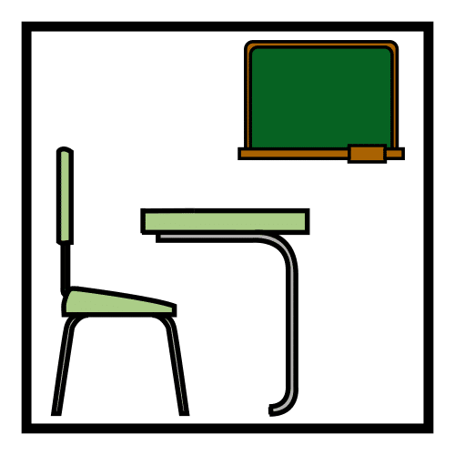
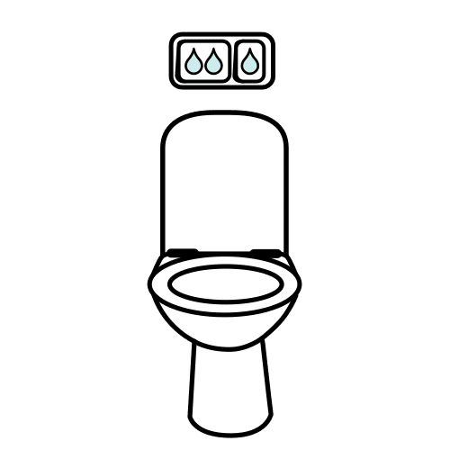
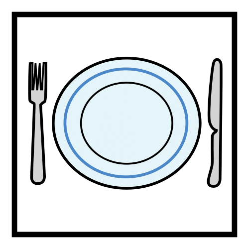
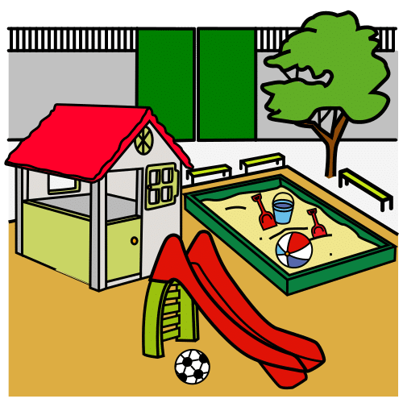
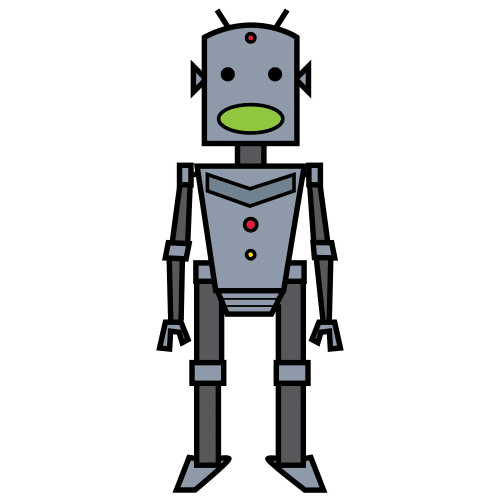
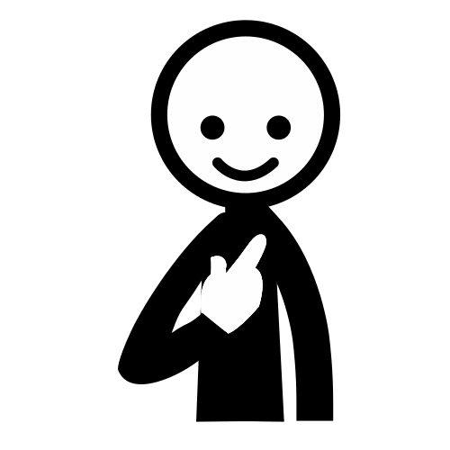
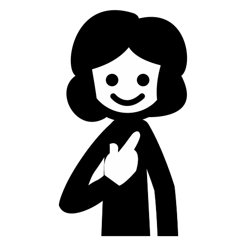
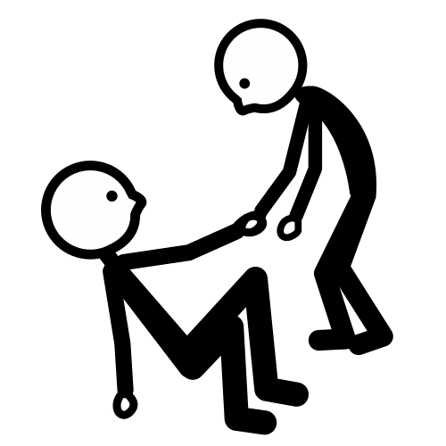
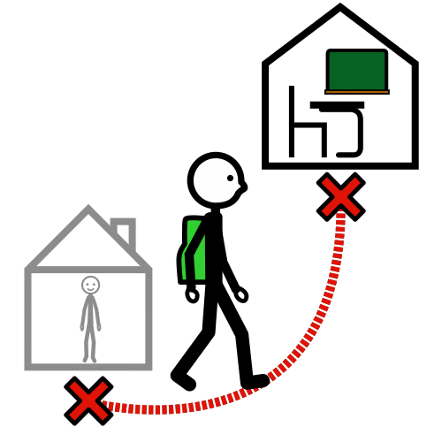
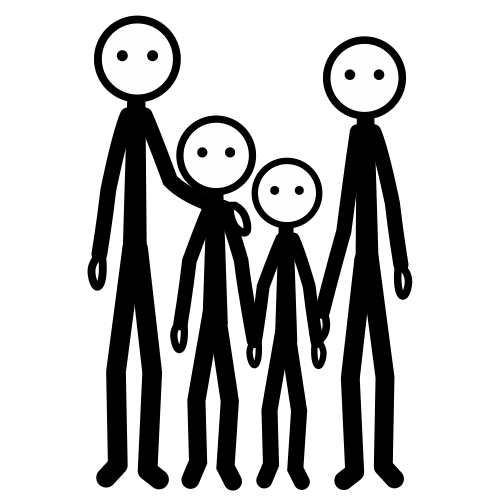

Hacemos el mapa y las señales del cole para que nadie se pierda.
Con el Diseño Universal para el Aprendizaje (DUA) y actividades en tres niveles.
Pictogramas: Sergio Palao. ARASAAC (Gobierno de Aragón). CC BY-NC-SA.
Licencia CC BY-NC-SA 4.0 ideducando.es





De un vistazo
Exploradores del cole
El reto
«Los de 3 años y quienes llegan nuevos se pierden en el cole. ¿Cómo les ayudamos a encontrar cada sitio?»
Producto final: un mapa grande del cole con pictogramas, señales con pictograma y palabra en las
puertas principales y una ruta guiada para la clase de 3 años o para el alumnado recién llegado.
Curso y duración5 años (tercer curso del segundo ciclo de Infantil). 8 sesiones de unos 45 minutos, en unas 3 semanas.
ÁreasCrecimiento en Armonía CA, Descubrimiento y Exploración del
Entorno DEE, con más peso, y Comunicación y Representación de la Realidad
CRR.
AgrupamientosAsamblea, parejas, pequeños grupos de 4 a 6, individual y parejas con la clase de 3 años.
EspaciosEl aula, los pasillos y sitios comunes del cole, y el patio o el gimnasio.
Qué van a aprender
Usar las nociones espaciales (delante, detrás, al lado, dentro…) para dar y seguir instrucciones.
Encontrar los sitios del cole con una hoja de ruta y contar un recorrido en orden.
Representar un camino real en un plano visto desde arriba.
Programar con tarjetas de flechas un camino de 3 a 6 pasos y corregirlo si falla.
Hacer señales con pictograma y palabra, explicar a quién ayudan y guiar con ellas a los pequeños.
Cómo se evalúaObservación directa con el registro del grupo (página ),
lo que producen y la autoevaluación con pictogramas (página ). La prueba final
es real: ¿encuentran los pequeños los sitios?
Materiales de IdEducando que se aprovechanLa
agenda visual, para anticipar cada
sesión; el
kit de bienvenida,
para la palabra en otras lenguas; y el
tablero de comunicación, para
que todos puedan decir adónde ir.
Las 8 sesiones
1 · semana 1¡Nos perdemos!Nos escribe la clase de 3 años.
2 · semana 1Arriba, abajo, delante, detrásNociones y tesoro.
3 · semana 1Exploramos el colePaseo con hoja de ruta.
4 · semana 2Dibujamos el caminoMaqueta y camino al patio.
5 · semana 2Las señales del coleA quién ayudan.
6 · semana 2Programamos el robotFlechas en el suelo.
7 · semana 3Montamos el gran mapaMapa y señales.
8 · semana 3¡Ruta guiada!Guiamos y valoramos.
Cómo está pensada
Un problema real del cole, para toda la clase
Por qué este reto
Parte de algo que el grupo ve: en el cole hay quien se pierde. Resolverlo moviliza a la vez las tres áreas, como pide
el anexo III del Decreto 196/2022, y deja algo útil para todo el centro.
Lo que dicen la ley y las guías. La accesibilidad cognitiva se hace efectiva, entre otros medios, con
pictogramas (texto refundido de la Ley General de derechos de las personas con discapacidad, art. 2 k, redacción de la
Ley 6/2022). La guía del Ministerio propone que el alumnado dibuje mapas del centro (Belinchón y otros, 2014, p. 25).
Las guías aconsejan pocos pictogramas y comprobar con quien los usa que se entienden (Equipo ARASAAC, 2026; Comité
Español de Representantes de Personas con Discapacidad, CERMI, 2019; Belinchón y otros, 2014, p. 26). Por eso las
señales van solo en las puertas principales y la sesión 8 es la prueba.
El Diseño Universal para el Aprendizaje en esta situación
El decreto pide el DUA (arts. 4.6 y 17.3). Pautas de CAST (2024; en la versión 3.0, «directrices»):
Compromiso
7.2 El mapa y las señales se quedan en el cole y los usan otros.
7.3 El tesoro, el robot humano y la ruta son juegos.
8.3 Cada grupo hace una pieza del mismo mapa.
Representación
2.5 Foto, pictograma, palabra, maqueta y paseo real.
2.3 La palabra, también en las lenguas de la clase.
3.4 De la cuadrícula al cole y del cole a casa.
Acción y expresión
4.1 Andar, señalar, pegar, hablar o usar el tablero.
6.2 Se planifica el camino antes de moverse.
6.4 Hoja de ruta y autoevaluación: se ve lo logrado.
Los tres niveles de cada actividad
La enseñanza multinivel propone un mismo objetivo para todo el grupo, con distintas formas de presentarlo, practicarlo
y evaluarlo (Collicott, 1991; Inclusive Schools Network, 2011). Toda la clase hace la misma actividad, a la vez y en el
mismo sitio. Los niveles describen la tarea, no al niño o la niña, y cada uno sube o baja dentro de la sesión.
1Con más apoyo
Rutas de 2 o 3 sitios, fotos y objetos reales, pocas opciones, el modelo del adulto y ayuda física o verbal.
2Base
Lo esperado a los 5 años: se orienta con pictogramas, ordena de 4 a 6 pasos y programa un camino con un giro.
3Con más reto
Más elementos y explicar el porqué: el camino más corto, símbolos propios, escribir sin modelo u otra lengua.
«Ajustes», en cada sesión, recoge apoyos para el alumnado con trastorno del espectro del autismo (TEA), trastorno por
déficit de atención e hiperactividad (TDAH), trastorno del desarrollo del lenguaje (TDL), discapacidad, altas
capacidades o recién llegado. Resumen en la página .
Si preparas la oposición
La parte A de la primera prueba pide «diseñar, justificar y secuenciar una intervención educativa» (Boletín Oficial de
la Región de Murcia, BORM, n.º 18, de 23 de enero de 2026, anexo XVII). Dónde mirar cada indicador de la unidad: DUA
y atención a la diversidad (páginas 4 y ), secuencia y agrupamientos (página 3 y
sesiones), detección (página ), criterios, competencias y saberes (páginas
y ), evaluación y práctica docente (páginas
y ). Úsala como modelo, nunca como
copia: tu programación y tu unidad tienen que ser originales.
Conexión con el currículo de la Región de Murcia
Qué trabaja del Decreto 196/2022
Solo lo que se trabaja y se evalúa en esta situación, con el texto literal del decreto (BORM n.º 255, de 4 de
noviembre de 2022): criterios de evaluación y saberes básicos del segundo ciclo.
Área
Competencia específica
Criterios de evaluación
Saberes básicos
Crecimiento en Armonía (CA)
2. Reconocer, manifestar y regular progresivamente sus emociones expresando necesidades y sentimientos…
2.2 Ofrecer y pedir ayuda en situaciones cotidianas, valorando los beneficios de la cooperación y la ayuda entre iguales.
B. Estrategias de ayuda y cooperación en contextos de juego y rutinas.
D. Fórmulas de cortesía e interacción social positiva. Actitud de ayuda y cooperación.
D. La respuesta empática a la diversidad debida a distintas formas de discapacidad y a sus implicaciones en la vida cotidiana.
4. Establecer interacciones sociales en condiciones de igualdad, valorando la importancia de la amistad, el respeto y la empatía…
4.1 Participar con iniciativa en juegos y actividades colectivas relacionándose con otras personas con actitudes de afecto y de empatía, respetando los distintos ritmos individuales y evitando todo tipo de discriminación.
4.3 Participar activamente en actividades relacionadas con la reflexión sobre las normas sociales que regulan la convivencia y promueven valores como el respeto a la diversidad, el trato no discriminatorio hacia las personas con discapacidad y la igualdad de género.
Descubrimiento y Exploración del Entorno (DEE)
1. Identificar las características de materiales, objetos y colecciones y establecer relaciones entre ellos…
1.3 Ubicarse adecuadamente en los espacios habituales, tanto en reposo como en movimiento, aplicando sus conocimientos acerca de las nociones espaciales básicas y jugando con el propio cuerpo y con objetos.
1.5 Organizar su actividad, ordenando las secuencias y utilizando las nociones temporales básicas.
A. Nociones espaciales básicas en relación con el propio cuerpo, los objetos y las acciones, tanto en reposo como en movimiento.
B. Nociones de cálculo para resolver retos. Programación robótica. Juegos de deducción. Pasatiempos lógico-matemáticos.
B. Estrategias de planificación, organización o autorregulación de tareas. Iniciativa en la búsqueda de acuerdos o consensos en la toma de decisiones.
B. Procesos y resultados. Hallazgos, verificación y conclusiones.
C. Conocimiento de los diferentes elementos que componen el entorno: vía pública, mobiliario, señales de tráfico...
2. Desarrollar, de manera progresiva, los procedimientos del método científico y las destrezas del pensamiento computacional…
2.5 Programar secuencias de acciones o instrucciones para la resolución de tareas analógicas y digitales, desarrollando habilidades básicas de pensamiento computacional.
2.6 Participar en proyectos utilizando dinámicas cooperativas, compartiendo y valorando opiniones propias y ajenas, y expresando conclusiones personales a partir de ellas.
Comunicación y Representación de la Realidad (CRR)
3. Producir mensajes de manera eficaz, personal y creativa, utilizando diferentes lenguajes…
3.1 Hacer un uso funcional del lenguaje oral, aumentando su repertorio lingüístico y construyendo progresivamente un discurso más eficaz, organizado y coherente en contextos formales e informales.
3.2 Utilizar el lenguaje oral como instrumento regulador de la acción en las interacciones con los demás con seguridad y confianza respetando los hábitos sociales básicos como el turno de palabra y actitud de escucha.
3.4 Elaborar creaciones plásticas, explorando y utilizando diferentes materiales y técnicas y participando activamente en el trabajo en grupo cuando se precise.
B. La realidad lingüística del entorno. Fórmulas o expresiones que responden a sus necesidades o intereses.
C. Verbalización de la secuencia de acciones en una acción planificada.
D. Los usos sociales de la lectura y la escritura. Funcionalidad y significatividad en situaciones comunicativas.
D. Aproximación al código escrito desde las escrituras indeterminadas.
D. Otros códigos de representación gráfica: imágenes, símbolos, números…
G. Materiales específicos e inespecíficos, elementos, diversidad de técnicas y procedimientos plásticos, materiales y soportes. Experimentación y manipulación.
I. Desarrollo del pensamiento computacional.
4. Participar por iniciativa propia en actividades relacionadas con textos escritos, mostrando interés y curiosidad…
4.1 Mostrar interés por comunicarse a través de códigos escritos, convencionales o no, valorando su función comunicativa.
5. Valorar la diversidad lingüística presente en su entorno, así como otras manifestaciones culturales…
5.1 Relacionarse de forma respetuosa en la pluralidad lingüística y cultural de su entorno, manifestando interés por otras lenguas, etnias y culturas.
Objetivos de la etapa (art. 7)
b) «Observar y explorar su entorno familiar, natural y social»: recorren su cole, lo observan y lo representan.
c) «Adquirir progresivamente autonomía en sus actividades habituales»: saber dónde está cada sitio da autonomía, a ellos y a los pequeños.
e) Relacionarse con los demás y «ejercitarse en el uso de la empatía»: guían con paciencia a quien llega.
f) «Desarrollar habilidades comunicativas en diferentes lenguajes y formas de expresión»: palabra, pictograma, plano y gesto.
g) «Iniciarse en las habilidades lógico-matemáticas, en la lectura y la escritura»: espacio, secuencias, programación y la palabra de cada señal.
Competencias clave (anexo I)
Competencia en comunicación lingüística (CCL): dan y siguen instrucciones y escriben las señales.
Competencia plurilingüe (CP): la palabra de cada sitio, también en las lenguas de la clase.
Competencia matemática y competencia en ciencia, tecnología e ingeniería (STEM): nociones espaciales, planos y secuencias.
Competencia digital (CD): programar con flechas inicia el pensamiento computacional, sin pantallas.
Competencia personal, social y de aprender a aprender (CPSAA): planifican, comprueban y corrigen.
Competencia ciudadana (CC): hacen el cole más fácil de entender para todas las personas.
Competencia emprendedora (CE): resuelven un problema real con un producto propio.
Sesión1
¡Nos perdemos!
Duración: 45 minutosGrupo: asamblea y parejasEspacio: zona de la asamblea
Para qué: entender el mensaje de la clase de 3 años, nombrar los sitios del cole y decidir juntos cómo ayudar.
CRR 4.1CA 2.2DEE 1.3 inicial Materiales: el mensaje de la clase de 3 años (página ) en un sobre;
8 fotos de sitios del cole, sin personas, a media hoja; las tarjetas de los sitios (página );
papel continuo para «Nuestro plan».
Inicio 10 minutos
Pon en la agenda visual los
pictogramas de la sesión: asamblea, carta y fotos (página ). Llega un sobre: mejor si lo
trae la tutora o el tutor de 3 años. Lee el mensaje despacio, señalando cada pictograma, y pregunta: «¿Qué les pasa?
¿Os ha pasado alguna vez?». Recuerda también a quien llega nuevo al cole con el curso empezado. Es la evaluación
inicial: anota quién nombra sitios del cole y cómo explica dónde están.
Desarrollo 25 minutos
¿Qué sitios tiene el cole? Enseña las fotos una a una. El grupo dice qué sitio es y qué se hace allí. Deja cada foto en el suelo, en el centro del corro.
Foto y pictograma. Cada pareja recibe la tarjeta de un sitio, busca su foto y la coloca al lado. Después cuenta a la clase qué se hace allí.
1Con más apoyo
Elige entre 2 fotos la que va con su tarjeta. El adulto nombra el sitio y hace el gesto (comer, jugar). Vale señalar.
2Base
Empareja su tarjeta con la foto y dice qué se hace en ese sitio.
3Con más reto
Además, explica cómo se llega desde la clase («salgo y está al lado del patio») o lee la palabra de la tarjeta.
Cierre 10 minutos
Pregunta: «¿Cómo podemos ayudarles?». Apunta sus ideas en el papel continuo con dibujos y palabras: es «Nuestro plan».
Si no salen, propón tú un mapa, señales en las puertas y una ruta para acompañarles. Anticipa: «Mañana entrenamos para
explorar el cole».
DUA en esta sesión
7.2 Un problema real de otra clase da sentido al reto.
2.5 Cada sitio llega por foto, pictograma, palabra y gesto.
5.1 Se responde señalando, emparejando o explicándolo.
Qué observar
CRR 4.1 ¿Le interesa lo que dice el mensaje? ¿Intenta leer un pictograma o una palabra?
CA 2.2 ¿Propone formas de ayudar a los pequeños?
DEE 1.3 Inicial: ¿sabe dónde están los sitios del cole?
Ajustes
TEA: anuncia en la agenda que llegará una carta, para que la sorpresa no agobie.
TDL: modela frases cortas con sitio y acción: «En el comedor comemos».
Recién llegados: la foto y el gesto bastan. Di el sitio en su lengua si lo sabes.
Visual: fotos grandes y con buen contraste, descritas en voz alta.
Sesión2
Arriba, abajo, delante, detrás
Duración: 45 minutosGrupo: toda la clase y parejasEspacio: aula despejada o sala de psicomotricidad
Para qué: usar las nociones espaciales con el cuerpo y con objetos para seguir y dar instrucciones.
DEE 1.3CRR 3.2 Materiales: 2 juegos de tarjetas de las nociones espaciales (página )
en una cesta; un «tesoro» por pareja, grande para que no quepa en la boca (una estrella de cartulina, un peluche); la
mascota de la clase o un muñeco; un aro.
Inicio 10 minutos
Agenda: jugar, tesoro y asamblea (página ). Jugad a «La exploradora dice»: «Pon las
manos encima de la cabeza», «ponte detrás de la silla», «mete un pie dentro del aro». Enseña la tarjeta de cada noción
mientras lo dices. Después esconde el muñeco y que el grupo diga dónde está: «¡Debajo de la mesa!».
Desarrollo 25 minutos
Búsqueda del tesoro por parejas. Uno esconde el tesoro mientras el otro se tapa los ojos. Después le da
la pista con palabras y con la tarjeta de la cesta: «Está debajo de la mesa azul». Lo busca y cambian de papel. Cada
pareja juega al menos 4 veces.
1Con más apoyo
Una pista, con la tarjeta en la mano y el tesoro a la vista y cerca. El adulto hace el gesto mientras lo dice.
2Base
Sigue una pista con una noción («detrás de la puerta») y da otra a su pareja con la tarjeta.
3Con más reto
Da y sigue pistas dobles («dentro de la caja que está al lado de la ventana») o usa la derecha y la izquierda.
Cierre 10 minutos
En la asamblea, cada pareja cuenta dónde escondió su tesoro y enseña la tarjeta. Pregunta: «¿Qué palabras nos ayudan a
encontrar las cosas?». Guardad las tarjetas en la cesta: servirán para explicar a los pequeños dónde está cada sitio.
DUA en esta sesión
7.3 El tesoro convierte la práctica en juego.
2.1 Cada noción, con tarjeta, gesto y palabra.
4.1 Se responde moviéndose, señalando o diciéndolo.
Qué observar
DEE 1.3 ¿Se sitúa y sitúa objetos delante, detrás, encima, debajo, dentro y al lado? ¿En qué nivel?
CRR 3.2 ¿Da una pista clara a su pareja y espera su turno?
Ajustes
TDAH: que empiece escondiendo, con una zona clara («solo en la alfombra y las mesas»).
Motora: tesoros al alcance de su mano; vale decir dónde está sin desplazarse.
Auditiva: la tarjeta siempre a la vista y la cara de quien habla, de frente.
Altas capacidades: inventa pistas con dos nociones para otra pareja.
Sesión3
Exploramos el cole
Duración: 45 minutosGrupo: pequeños grupos de 5 o 6, cada uno con un adultoEspacio: pasillos y sitios comunes del cole
Para qué: recorrer el cole, encontrar los sitios con la hoja de ruta y fijarse en las señales que ya hay.
DEE 1.3CRR 4.1 Materiales: una hoja de ruta (página ) por niño o niña, sobre un cartón
que haga de tablilla; ceras o gomets; un móvil o una cámara del centro, solo para fotos de sitios y señales.
Antes: pide permiso al equipo directivo, avisa a las clases por las que pasaréis y
cuenta con los adultos que fije el centro, uno por grupo. Da a cada grupo un orden distinto para no coincidir.
Inicio 10 minutos
Agenda: asamblea, pasear y explorar (página ). Repasa las normas del paseo con gestos:
andamos, vamos juntos, hablamos bajito y caminamos al lado del adulto. Reparte las hojas de ruta, lee los sitios en voz
alta y di a cada grupo cuál es su primer sitio.
Desarrollo 25 minutos
Paseo. En cada sitio, el grupo se para y comprueba si es el de la hoja: lo colorea o le pone un gomet.
Mirad si la puerta tiene ya una señal y rodead «sí» o «no». El adulto fotografía el sitio y las señales, nunca a las
personas.
1Con más apoyo
Marca solo 3 sitios, con la hoja doblada por la línea, y lleva su pictograma en la mano; el adulto lo nombra y lo señala.
2Base
Encuentra y marca los 8 sitios, y dice si cada uno tiene señal.
3Con más reto
Además, dice qué sitio viene después y qué hay cerca («al lado del comedor está la cocina») o qué señal falta.
Cierre 10 minutos
De vuelta en clase, cada grupo cuenta qué sitios encontró y qué señales vio. Apunta en «Nuestro plan» los sitios sin
señal o con señales difíciles de entender: «¡Ahí pondremos las nuestras!».
DUA en esta sesión
7.4 Las normas del paseo, anticipadas con gestos, quitan incertidumbre.
6.4 Marcar cada sitio deja ver cuánto falta.
3.4 Lo trabajado en clase se usa en el cole real.
Qué observar
DEE 1.3 ¿Se orienta por el cole y encuentra los sitios con la hoja de ruta?
CRR 4.1 ¿Se fija en carteles y señales? ¿Pregunta qué pone?
Ajustes
TEA: enseña antes las fotos del recorrido y avisa de los sitios con ruido. Si usa cascos, que los lleve.
TDAH: que lleve la hoja de ruta del grupo y avise en cada parada.
Motora: elige el recorrido con rampa o ascensor y apúntalo para el mapa.
Visual: describe el camino con referencias que se oyen o se tocan.
Sesión4
Dibujamos el camino
Duración: 45 minutosGrupo: asamblea y pequeños grupos de 4 o 5Espacio: aula
Para qué: ordenar los pasos de un recorrido, contarlo y pasarlo al papel visto desde arriba.
DEE 1.5CRR 3.1CRR 3.4 Materiales: un pliego de papel continuo en el suelo, bloques de construcción y un rotulador; para
cada grupo, las 6 fotos del camino de la clase al patio, una tira de papel continuo de 1 m, pegamento y ceras.
Inicio 10 minutos
Agenda: construir, ordenar, dibujar y recoger (página ). «La clase vista por un
pájaro»: sobre el papel del suelo, cada niño o niña pone un bloque donde está su mesa; otros bloques son la puerta y la
pizarra. Rodea los bloques con el rotulador y quítalos: «Así se ve la clase desde arriba. Esto es un plano».
Desarrollo 25 minutos
El camino de la clase al patio. En pequeños grupos, ordenad las fotos del recorrido en la tira,
pegadlas y unidlas con flechas. Después, contadlo: «Primero salimos de clase, después…».
1Con más apoyo
Ordena 3 fotos (la clase, el pasillo y el patio) con un modelo al lado. Al pegarlas, dice «primero» y «al final».
2Base
Ordena las 6 fotos, las une con flechas y cuenta el camino con «primero, después y al final».
3Con más reto
Dibuja el camino visto desde arriba, con las puertas y lo que hay al lado, y se lo explica a otro grupo.
Cierre 10 minutos
Cada grupo enseña su tira. Comparad: ¿todos los caminos son iguales? ¿Cuál es más corto? Decidid qué sitios llevará
el gran mapa y apuntadlo en «Nuestro plan». Recoged los bloques entre todos.
DUA en esta sesión
3.2 La maqueta enseña la idea clave de un mapa: mirar desde arriba.
5.2 Bloques, fotos y dibujo: varias formas de construir.
8.3 En cada grupo, cada uno pega, dibuja o cuenta una parte.
Qué observar
DEE 1.5 ¿Ordena los pasos del recorrido? ¿Cuántos?
CRR 3.1 ¿Cuenta el camino con orden («primero, después»)?
CRR 3.4 ¿Participa en la maqueta y en la tira con su grupo?
Ajustes
Discapacidad intelectual: las fotos de una en una y, si hace falta, repetid el camino real.
Motora: fotos pegadas en cartón, más fáciles de coger.
TDL: tres tarjetas escritas, «primero», «después» y «al final», para señalar mientras cuenta.
Altas capacidades: compara dos caminos y explica cuál es mejor.
Sesión5
Las señales del cole
Duración: 45 minutosGrupo: asamblea y parejas o tríosEspacio: aula
Para qué: descubrir a quién ayudan las señales y hacer las nuestras con pictograma y palabra.
CA 4.3CRR 4.1CRR 5.1 Materiales: fotos de las señales del paseo y de la calle (un semáforo, un paso de peatones); las
señales para recortar (páginas a ), una por
pareja o trío; ceras, lápices y un rotulador amarillo; la tarjeta «baño» del
kit de bienvenida, si os sirve.
Inicio 10 minutos
Agenda: asamblea, señales y escribir (página ). Enseña las fotos: «¿Para qué sirven las
señales?». Plantea casos con la mascota: «Mi amiga aún no sabe leer», «mi amigo habla otra lengua», «mi amiga va en
silla de ruedas: ¿por dónde sube?», «mi amigo no ve». ¿Qué les ayuda? Llegad a una idea: un dibujo claro y la palabra
grande, a la altura de los ojos, ayudan a muchas personas; a quien no ve le ayuda tocar algo o que le acompañen.
Cuéntales que una norma, la Convención sobre los derechos de las personas con discapacidad, pide señales fáciles de
entender en edificios como el cole (art. 9).
Desarrollo 25 minutos
Nuestras señales. Cada pareja o trío prepara la señal de un sitio de «Nuestro plan». Comprueban que
el pictograma y la palabra dicen lo mismo y cada uno escribe la palabra una vez en el recuadro «Lo escribimos
en clase». Si en clase se habla otra lengua, la palabra en esa lengua va en su línea.
1Con más apoyo
Repasa con cera la palabra que el adulto ha escrito antes en amarillo dentro del recuadro.
2Base
Copia la palabra mirando la impresa y la comprueba letra a letra con un compañero o compañera.
3Con más reto
Escribe la palabra sin mirar y la compara después; añade otra lengua o dibuja el pictograma de un sitio sin señal.
Cierre 10 minutos
Cada grupo enseña su señal: «¿La entendería alguien de 3 años? ¿Y alguien que no lee?». Después de la sesión, plastifica
cada señal en su funda A5. Anticipa: «Pediremos permiso al equipo directivo para ponerlas».
DUA en esta sesión
9.4 Ponerse en el lugar de quien no lee, no ve o va en silla.
2.3 La palabra, también en las lenguas de la clase.
5.3 Repasar, copiar o escribir solo: apoyos graduados.
Qué observar
CA 4.3 ¿Explica a quién ayuda una señal y por qué?
CRR 4.1 ¿Escribe la palabra repasando, copiando o solo?
CRR 5.1 ¿Le interesa cómo se dice en otras lenguas?
Ajustes
Motora: cera gruesa o letras imantadas para componer la palabra.
Visual: en la señal de su clase, un objeto pegado que se reconozca al tocarlo.
Recién llegados: dice cómo se llama el sitio en su lengua y tú lo escribes: es quien más sabe.
TDAH: dos pasos, cada uno con su pictograma: escribir y después colorear.
Sesión6
Programamos el robot
Duración: 45 minutosGrupo: asamblea y 4 grupos de 6, dos en cada cuadrículaEspacio: patio, gimnasio o aula despejada
Para qué: programar con tarjetas de flechas el camino a un sitio, comprobarlo y corregirlo si falla.
DEE 2.5CRR 3.2DEE 1.3 Materiales: 2 cuadrículas de 4 × 4 casillas en el suelo (página );
2 juegos de tarjetas de flechas (página ); las tarjetas de los sitios (página
); un gomet por niño o niña. El robot de suelo del cole, si lo hay (opcional).
Inicio 10 minutos
Agenda: asamblea, robot y pensar (página ). Pon a cada uno un gomet en la mano derecha.
Explica: «Un robot hace lo que le decimos, paso a paso, y no adivina». Presenta las tarjetas «avanza», «gira a la
derecha» y «gira a la izquierda». Haz tú de robot y que la clase te programe hasta la puerta. Si una tarjeta está mal,
obedécela: «¡Hago lo que pone!».
Desarrollo 25 minutos
El robot lleva a los pequeños. Pon la tarjeta de un sitio en una casilla: «Hay que llevar a una niña de
3 años al baño». Un grupo coloca las flechas en fila junto a la cuadrícula. El otro hace de robot y comprueba: el robot
sigue las tarjetas una a una mientras todos las leen en voz alta. Si no llega, buscad la tarjeta que falla y cambiadla.
Después, cambiad los papeles.
1Con más apoyo
El sitio está en línea recta: solo «avanza», de 1 a 3 tarjetas. Primero hace el camino andando y después pone una tarjeta por paso.
2Base
El sitio pide un giro: programa de 3 a 5 tarjetas y lo comprueba.
3Con más reto
Dos giros o un obstáculo (una silla): busca el camino más corto o arregla un programa con un error puesto a propósito.
Cierre 10 minutos
Pregunta: «¿Qué pasaba cuando una tarjeta estaba mal?». Llegad juntos a una idea: el orden importa. Si tenéis robot de
suelo, probad con él uno de los programas. Recuerda: «A la derecha es hacia la mano del gomet».
DUA en esta sesión
7.3 Hacer de robot es un juego.
6.2 Antes de mover, se planifica el camino.
8.5 El robot enseña el error al momento y el grupo lo corrige.
Qué observar
DEE 2.5 ¿Ordena las flechas para llegar al sitio? ¿Encuentra la que falla?
CRR 3.2 ¿Guía al robot con la palabra y respeta el turno?
DEE 1.3 ¿Gira a la derecha y a la izquierda sin cambiar de casilla?
Ajustes
Motora: casillas de 60 cm para que quepa la silla, o programa mientras otro hace de robot.
TDAH: que sea robot en la primera ronda; turnos cortos y un papel claro.
TEA: anticipa con pictogramas el orden de los papeles; si no quiere ser robot, que lea las tarjetas.
TDL y auditiva: se levanta y se señala la tarjeta antes de decirla.
Sesión7
Montamos el gran mapa
Duración: 45 minutosGrupo: pequeños grupos de 4 o 5, una zona del cole cada unoEspacio: aula y pasillos
Para qué: hacer entre todos el mapa del cole con caminos y pictogramas, y poner las señales en las puertas.
DEE 2.6CRR 3.4 Materiales: un trozo de papel continuo de 1 m por grupo; las tiras del camino (sesión 4); la
leyenda y los pictogramas para el mapa (página ); ceras, rotuladores gruesos y pegamento;
las señales plastificadas y masilla adhesiva.
Antes: pide permiso al equipo directivo para colgar el mapa y poner las señales, y
decidid juntos dónde van. Cuenta con un adulto por grupo para ponerlas.
Inicio 5 minutos
Agenda: mapa, pegar y colgar (página ). Recordad «Nuestro plan» y las tiras del camino.
Reparte las zonas del cole, por ejemplo: la entrada, el pasillo de Infantil, el patio, el comedor y el gimnasio. Cada
grupo hará la pieza de su zona. Para que encajen, marca antes en cada papel por dónde se une con la zona de al lado.
Desarrollo 25 minutos
Las piezas del mapa. Cada grupo dibuja su zona: los sitios con su pictograma y los caminos con flechas.
Mientras, preguntad: «¿Esto va al lado o enfrente? ¿Se entiende desde arriba?».
1Con más apoyo
Pega los pictogramas sobre las marcas que ha hecho el adulto y une los puntos del camino con una cera.
2Base
Decide con su grupo dónde va cada sitio, lo pega y dibuja el camino con flechas.
3Con más reto
Añade puertas, escaleras, la rampa y otras referencias, y completa la leyenda con símbolos propios.
Cierre 15 minutos
Unid las piezas en el suelo como un puzle, pegad la leyenda y la estrella «Estás aquí»: es el gran mapa. Colgadlo donde
decidió el equipo directivo. Después, cada grupo pone con su adulto las señales de su zona: a la altura de los ojos de
los pequeños y sin tapar las señales de evacuación.
DUA en esta sesión
8.3 Cada grupo hace una pieza del mismo mapa: todas hacen falta.
6.3 La leyenda ordena lo que significa cada símbolo.
5.2 Pegar, dibujar y escribir: varias herramientas.
Qué observar
DEE 2.6 ¿Aporta ideas y escucha las de su grupo? ¿Explica por qué un sitio va ahí?
CRR 3.4 ¿Participa en la pieza del mapa con distintos materiales y técnicas?
Ajustes
TEA: un encargo visual en su grupo (pegar los pictogramas) y aviso antes de salir a poner las señales.
Motora: la pieza en una mesa a su altura, en vez de en el suelo.
Discapacidad intelectual: marcas donde pegar y una pieza terminada como modelo.
Altas capacidades: mide en pasos la distancia entre dos sitios y la apunta en el mapa.
Sesión8
¡Ruta guiada!
Duración: 45 minutosGrupo: parejas con la clase de 3 años, asamblea e individualEspacio: el cole
Para qué: guiar a los más pequeños con el mapa y las señales, comprobar si se entienden y valorar lo aprendido.
CA 2.2CA 4.1CRR 3.1DEE 2.6 Materiales: el gran mapa y las señales ya puestas; gomets; la autoevaluación (página
) y la nota para las familias (página ), una por
niño o niña.
Antes: acuerda con la tutora o el tutor de 3 años la hora, las parejas y los adultos
de cada grupo. Si en otras clases hay alumnado recién llegado, invítalo también.
Inicio 10 minutos
Agenda: guiar, pensar y camino a casa (página ). En la clase de 3 años, el grupo presenta
el mapa: «Esta estrella dice dónde estamos». Cada niño o niña de 5 años conoce a su pareja y repasan las normas: de la
mano, despacio y esperando.
Desarrollo 25 minutos
La ruta. Grupos de 4 o 5 parejas, cada uno con un adulto y un orden distinto. En cada sitio, quien
tiene 5 años enseña la señal y pregunta: «¿Qué sitio es?». Si su pareja no la entiende, lo recuerdan para mejorarla.
1Con más apoyo
Guía de la mano a su pareja en 1 o 2 sitios de la ruta, junto al adulto, y le enseña la señal.
2Base
Guía a 3 sitios, enseña cada señal y explica qué se hace allí.
3Con más reto
Explica el camino con palabras de lugar («ahora a la derecha») y marca con un gomet en el mapa las señales que no se entendieron.
Cierre 10 minutos
Ya en clase: «¿Lo han entendido? ¿Qué cambiaríamos?». Apuntad las mejoras. Cada niño o niña hace su autoevaluación:
léela fila a fila. Reparte la nota para las familias: el reto sigue en el camino de casa al cole.
DUA en esta sesión
9.3 Pensar juntos qué ha funcionado y qué mejorar.
8.4 La clase ayuda a otra: el cole es de todos.
7.2 Lo que han hecho sirve de verdad.
Qué observar
CA 2.2 ¿Ofrece ayuda sin hacerlo todo por su pareja?
CA 4.1 ¿Espera y adapta su paso al de su pareja?
CRR 3.1 ¿Explica el camino con orden y palabras de lugar?
Ajustes
TEA: pareja y ruta conocidas de antemano; si le cuesta dar la mano, que guíe con el mapa.
TDAH: que lleve el mapa del grupo.
Recién llegados: guía junto a un compañero o compañera, con las tarjetas «¡Hola!» y «Baño» del kit de bienvenida.
Auditiva: acordad gestos para «para», «sigue» y «mira».
Evaluación
Observar para ajustar
En Infantil la evaluación es «global, continua y formativa», y «la observación directa y sistemática constituirá la
técnica principal» (Decreto 196/2022, art. 14.1). Se toman como referencia los criterios del ciclo (art. 14.2).
Momentos
Inicial · sesión 1
En la asamblea, anota qué sitios del cole conoce cada niño o niña y cómo explica dónde están.
Continua · sesiones 2 a 7
Cada sesión dice qué observar. Anota en el registro si lo hace solo, con ayuda o aún no, y en qué nivel.
Final · sesión 8
La ruta con los pequeños, la autoevaluación del alumnado y el registro completo. Compara con la evaluación inicial.
Instrumentos
Registro del grupo (página ): un indicador por criterio, 25 filas.
Producciones: la hoja de ruta, la tira del camino, la señal y la pieza del mapa. Si las fotografías, que sean solo las producciones.
Autoevaluación con pictogramas (página ) y la conversación final de la sesión 8.
La autoevaluación del alumnado
En la sesión 8, cada niño o niña rodea o colorea una opción en cada fila. Léela con el grupo, fila a fila, y anota lo que
digan. No hay caras tristes: ninguna respuesta es mala.


Lo he hecho yo

Con ayudaQuiero practicar más
Evalúo mi práctica
Todos los profesionales evalúan su propia práctica educativa (art. 14.3). Al terminar, marca y anota:
¿El reto ha tenido sentido para el grupo? ¿Lo recordaban sin que yo lo nombrase?
¿Toda la clase ha hecho la misma actividad, cada uno con el apoyo que necesitaba?
¿He cambiado de nivel a alguien dentro de la sesión cuando lo he visto preparado?
¿Los tiempos han sido realistas? ¿Qué sesión se ha alargado o se ha quedado corta?
¿Los paseos se han hecho con seguridad y con los adultos previstos?
¿Las señales y el mapa se entienden de verdad? ¿Qué no entendieron los pequeños?
¿Me he coordinado lo necesario con la tutora o el tutor de 3 años, el equipo directivo y las familias?
¿Qué cambiaría la próxima vez?
Mis notas
Registro del grupo · Exploradores del cole
✓ lo hace solo · ~ con ayuda · · aún no. Añade el nivel en que lo
logra: ① ② ③. Escribe solo el nombre o las iniciales y guarda la hoja en el centro.
Nombre
Atención a la diversidad
Si en tu clase hay…
Dos medidas de esta situación para cada necesidad. Describen apoyos, no a los niños y niñas. La atención
individualizada es «la pauta ordinaria de la acción educativa» (Decreto 196/2022, art. 16.1).
Necesidad
Medida 1
Medida 2
Alumnado con TEA
Anticipa cada salida con fotos del recorrido en la agenda y avisa de los sitios con ruido.
Dale un papel fijo y concreto en cada grupo: llevar la hoja de ruta, pegar los pictogramas o leer las tarjetas.
TDAH
Papeles con movimiento y responsabilidad: robot, quien lleva el mapa o quien avisa en cada parada.
Tareas cortas con algo que marcar (un gomet, una cruz) y una zona de juego con límites claros.
TDL
Frases modelo cortas con palabras de lugar y gesto: «Está detrás de la puerta». Repite ampliando lo que diga.
Tarjetas de nociones y de sitios para señalar mientras habla, y el tablero de comunicación a mano.
Discapacidad intelectual
Menos sitios (2 o 3) con fotos de su propio cole, y el mismo camino real repetido varias veces.
Una instrucción cada vez, con el modelo del adulto y un objeto real del sitio (una cuchara para el comedor).
Discapacidad motora
Recorridos con rampa o ascensor, que también salen en el mapa y en la leyenda.
Casillas de 60 cm en la cuadrícula y tarjetas grandes con pestaña o velcro, fáciles de coger.
Discapacidad visual
Señales con buen contraste y, en su clase, un objeto pegado que se reconozca al tocarlo.
Describe el camino con referencias que se oyen o se tocan, y marca la cuadrícula con cinta gruesa o cuerda.
Discapacidad auditiva
Instrucciones con tarjeta y gesto, y la cara de quien habla siempre de frente.
En los paseos, explica en cada parada y nunca mientras andáis. Acordad gestos para «para» y «sigue».
Altas capacidades
Retos de diseño: símbolos propios para la leyenda, el camino más corto o el plano de otra planta.
Papel de ayudante que explica y comprueba, sin hacer la tarea de otro.
Incorporación tardía
La palabra del sitio en su lengua, en las señales: es quien más sabe de esa palabra.
Un compañero o compañera guía y las tarjetas del kit de bienvenida para pedir y entender.
Detectar a tiempo
Anota lo que ves, cuándo y cuántas veces, sin diagnosticar. Si alguna de estas señales se repite pese a los apoyos,
habla con la familia y con el equipo de orientación del centro: en la Región de Murcia, el Equipo de Orientación
Educativa y Psicopedagógica (EOEP).
Se desorienta a menudo en sitios que conoce bien.
Tropieza mucho, evita las escaleras o pierde el equilibrio al girar.
Se acerca mucho a los pictogramas para verlos o no los distingue de lejos.
No responde a las instrucciones si no mira a quien habla.
No usa palabras de lugar aunque las haya practicado.
Lo pasa muy mal en sitios con mucho ruido o mucha gente.
Para las familias
Exploradores del cole
En clase estamos haciendo un mapa del cole.
Los niños y niñas de 3 años a veces se pierden. Quienes llegan nuevos, también.
Vamos a ayudarles.
Qué hacemos en clase
Jugamos con palabras como delante, detrás o al lado.
Paseamos por el cole y hacemos señales para las puertas.
Programamos un robot con flechas.
Al final, guiamos a los pequeños por el cole.

Una idea para casa: el camino al cole
Cuando vengáis al cole, buscad juntos 3 cosas que os ayuden a no perderos. Por ejemplo, una tienda, un árbol o una señal.
Preguntad: «¿Por dónde vamos ahora? ¿Qué hay al lado?».
Dejad que os guíe un trocito del camino. Siempre de la mano y con cuidado en la calle.
Mirad juntos las señales de tráfico y el semáforo. ¿Qué nos dicen?
No hace falta escribir vuestra dirección ni hacer fotos.

¿En casa habláis otra lengua?
Escribid cómo se dicen estas palabras en vuestra lengua. Las pondremos en las señales.
baño
patio
comedor
Mensaje del cole
Exploradores del cole. IdEducando, octubre de 2026. Licencia CC BY-NC-SA 4.0. Escrito siguiendo las
pautas de lectura fácil. Los símbolos pictográficos utilizados son propiedad del Gobierno de Aragón y han sido creados
por Sergio Palao para ARASAAC (https://arasaac.org), que los distribuye bajo Licencia Creative Commons BY-NC-SA.
Imprimible · Sesiones 1 a 8
Pictogramas de la agenda
Recorta por la línea de puntos. El número pequeño dice en qué sesiones se usa. Para la tira «Mi día» de la agenda
visual, imprímela al 70 %: cada pictograma medirá unos 2 × 2 cm.
Pictogramas: Sergio Palao. Origen: ARASAAC (arasaac.org). Licencia CC BY-NC-SA. Propiedad: Gobierno de Aragón.
Imprimible · Sesión 1
El mensaje de la clase de 3 años
Para la tutora o el tutor de 3 años: leed el mensaje en vuestra clase, firmadlo con dibujos y metedlo
en un sobre para la clase de 5 años.
Pictogramas: Sergio Palao. Origen: ARASAAC (arasaac.org). Licencia CC BY-NC-SA. Propiedad: Gobierno de Aragón.
Imprimible · Sesiones 1 y 6
Tarjetas de los sitios del cole
Recorta por la línea de puntos. En la sesión 1 se emparejan con las fotos de tu cole; en la 6 marcan los sitios de la
cuadrícula.
Pictogramas: Sergio Palao. Origen: ARASAAC (arasaac.org). Licencia CC BY-NC-SA. Propiedad: Gobierno de Aragón.
Imprimible · Sesión 2
Tarjetas de las nociones espaciales
Recorta por la línea de puntos. Imprime 2 copias. Las dos tarjetas en blanco son para otra palabra que uséis en clase.
Pictogramas: Sergio Palao. Origen: ARASAAC (arasaac.org). Licencia CC BY-NC-SA. Propiedad: Gobierno de Aragón.
Imprimible · Sesión 3
Mi hoja de ruta
Me llamo
Grupo
Sitio
¡Lo encontramos!
¿Tiene señal?
Ruta corta: dobla la hoja por la línea roja de puntos y quedan los 3 primeros sitios.
Pictogramas: Sergio Palao. Origen: ARASAAC (arasaac.org). Licencia CC BY-NC-SA. Propiedad: Gobierno de Aragón.
Para el docente · Sesión 6
Cómo marcar la cuadrícula del suelo
Unos 15 minutos por cuadrícula. Haz dos, para que nadie espere mucho su turno.
Elige un sitio llano y despejado: el patio, el gimnasio o el aula sin mesas.
Marca un cuadrado de 1,60 × 1,60 m con cinta de carrocero, o con tiza si es en el patio.
Divide cada lado en 4 partes de 40 cm y une las marcas: salen 16 casillas. En cada una caben los dos pies de un niño o niña. Gastarás unos 16 m de cinta.
Pega con un trozo de cinta las tarjetas de 3 o 4 sitios en algunas casillas: la clase, el baño, el comedor o el patio.
Marca la salida con una estrella y una flecha que diga hacia dónde mira el robot al empezar.
Junto a la cuadrícula, deja libre una franja del suelo: ahí se ponen en fila las tarjetas del programa, de izquierda a derecha.
Antes de empezar, pon un gomet en la mano derecha de cada niño o niña. La tarjeta de girar a la derecha lleva un punto, como el gomet.
Las reglas del robot
Hace solo lo que dicen las tarjetas, una cada vez y en orden. «Avanza»: pasa a la casilla de delante. «Gira a la
derecha» o «gira a la izquierda»: da un cuarto de vuelta sin cambiar de casilla. Si llega a un borde o a una
casilla con obstáculo, se para y el grupo busca el error.
Si el cole tiene un robot de suelo
Haz otra cuadrícula en papel continuo con casillas del tamaño de su paso: míralo en sus instrucciones. Programad
primero con las tarjetas y después pasad las mismas órdenes al robot.
Ejemplo: de la salida (estrella) al baño. El programa tiene 4 tarjetas:
Imprimible · Sesión 6
Tarjetas de flechas para programar
Recorta por la línea de puntos. Imprime 2 copias, una para cada cuadrícula.
Las flechas son de IdEducando.
Imprimible · Sesión 7
Leyenda y pictogramas para el mapa
Recorta la leyenda entera y pégala en una esquina del mapa. Los pictogramas de abajo van en el mapa, en su sitio.
Leyenda de nuestro mapa
Para pegar en el mapa: recorta por la línea de puntos.
Pictogramas: Sergio Palao. Origen: ARASAAC (arasaac.org). Licencia CC BY-NC-SA. Propiedad: Gobierno de Aragón. La
estrella y el camino son de IdEducando.
Imprimible · Sesión 8
¿Cómo lo he hecho?
Me llamo
Rodea o colorea un dibujo en cada fila.
Lo he hecho yo
Con ayuda
Quiero practicar más
Pictogramas: Sergio Palao. Origen: ARASAAC (arasaac.org). Licencia CC BY-NC-SA. Propiedad: Gobierno de Aragón.
Para terminar
Fuentes y créditos
Exploradores del cole: situación de aprendizaje para 5 años, con DUA y multinivel. IdEducando, octubre
de 2026. Ficha y novedades:
ideducando.es/material-gratuito/situacion-aprendizaje-5-anos-mapa-del-cole
Currículo y normativa
Decreto n.º 196/2022, de 3 de noviembre, por el que se establece la ordenación y el currículo de la etapa de Educación
Infantil en la Comunidad Autónoma de la Región de Murcia. BORM n.º 255, de 4 de noviembre de 2022: artículos 4.6, 7,
14, 16 y 17.3; anexo I; Crecimiento en Armonía, págs. 33078 y 33083 a 33086; Descubrimiento y Exploración del Entorno,
págs. 33090, 33091 y 33094 a 33097; Comunicación y Representación de la Realidad, págs. 33102 a 33104 y 33107 a
33110; anexo III, pág. 33111.
Real Decreto Legislativo 1/2013, de 29 de noviembre, texto refundido de la Ley General de derechos de las personas con
discapacidad y de su inclusión social, artículo 2 k), en la redacción de la Ley 6/2022, de 31 de marzo (BOE núm. 78,
de 1 de abril de 2022). Convención sobre los derechos de las personas con discapacidad (ONU, 2006), artículo 9:
instrumento de ratificación en el BOE núm. 96, de 21 de abril de 2008.
Convocatoria de oposiciones: BORM n.º 18, de 23 de enero de 2026, anexo XVII, «Cuerpo de Maestros. 597031 - Educación
Infantil», págs. 1720 a 1724.
Diseño Universal para el Aprendizaje y enseñanza multinivel
CAST (2024). Pautas para el Diseño Universal para el Aprendizaje, versión 3.0. udlguidelines.cast.org/es.
Collicott, J. (1991). Implementing multi-level instruction: Strategies for classroom teachers. En G. L. Porter y D.
Richler (Eds.), Changing Canadian Schools: Perspectives on disability and inclusion (pp. 191-218). Roeher
Institute. Inclusive Schools Network (2011). Using multi-level instruction for a classroom of diverse learners.
inclusiveschools.org.
Accesibilidad cognitiva, mapas y señales
Belinchón, M., Casas, S., Díez, C. y Tamarit, J. (2014). Accesibilidad cognitiva en los centros educativos.
Ministerio de Educación, Cultura y Deporte (Guías prácticas de orientaciones para la inclusión educativa), págs. 25 y
26. Subcomisión de Accesibilidad Cognitiva del Comité Español de Representantes de Personas con Discapacidad (CERMI)
(2019). Cómo usar los pictogramas. Versión en lectura fácil de Plena inclusión España. Equipo ARASAAC
(2026). «7.3 Accesibilidad cognitiva con pictogramas en los centros educativos». En Arasaac, Librería CATEDU,
libros.catedu.es.
El mensaje de la clase de 3 años y la nota para las familias siguen las pautas de la norma UNE 153101:2018 EX,
Lectura Fácil. Pautas y recomendaciones para la elaboración de documentos. No están validados con personas
lectoras.
Pictogramas e ilustraciones
«Los símbolos pictográficos utilizados son propiedad del Gobierno de Aragón y han sido creados por Sergio Palao para
ARASAAC (https://arasaac.org), que los distribuye bajo Licencia Creative Commons BY-NC-SA». Si adaptas el material,
mantén este texto. Con pictogramas de ARASAAC, el material no se puede vender. El plano de la portada, las flechas, la
estrella y el camino son de IdEducando; los pictogramas que llevan son de ARASAAC.
Licencia
Licencia CC BY-NC-SA 4.0: puedes copiar y adaptar este material citando a IdEducando, sin fines comerciales y con la
misma licencia.

 Qué hacemos en clase
Qué hacemos en clase